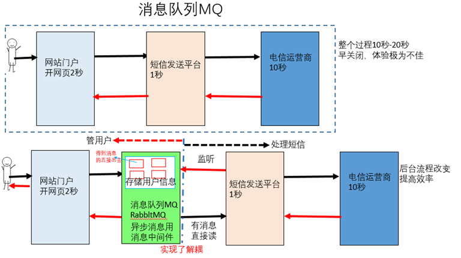
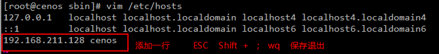

原文连接:https://www.cnblogs.com/jxearlier/p/11920825.html
本文适合JAVA新人，想了解RabbitMQ又不想去看官网文档的人（英语水看的头疼(◎﹏◎)，但建议有能力还是去看官网文档）。
消息队列MQ（一）
MQ全称为Message Queue，消息队列是应用程序和应用程序之间的通信方法。
先引入一下常见的通讯方案。
为什么使用MQ？
在项目中，可将一些无需即时返回且耗时的操作提取出来，进行异步处理，而这种异步处理的方式大大的节省服务器的请求响应时间，从而提高了系统的吞吐量。
开发中消息队列通常有如下应用场景：
应用解耦、异步处理(提高系统响应速度)、流量削峰(高峰堆积消息，峰后继续处理消息)、日志处理(分布式日志，一般使用kafka)、纯粹通讯。

AMQP 和 JMS
MQ是消息通信的模型；实现MQ的大致有两种主流方式：AMQP、JMS。
AMQP
AMQP高级消息队列协议，是一个进程间传递异步消息的网络协议，更准确的说是一种binary wire-level protocol（链接协议）。这是其和JMS的本质差别，AMQP不从API层进行限定，而是直接定义网络交换的数据格式。
JMS
JMS即Java消息服务（JavaMessage Service）应用程序接口，是一个Java平台中关于面向消息中间件（MOM）的API，用于在两个应用程序之间，或分布式系统中发送消息，进行异步通信。
AMQP 与 JMS 区别
JMS是定义了统一的接口，来对消息操作进行统一；AMQP是通过规定协议来统一数据交互的格式
JMS限定了必须使用Java语言；AMQP只是协议，不规定实现方式，因此是跨语言的。
JMS规定了两种消息模式；而AMQP的消息模式更加丰富。
消息队列产品：目前市面上成熟主流的MQ有Kafka 、RocketMQ、RabbitMQ，本文主要介绍RabbitMQ使用。
使用Erlang(语言)编写的一个开源的消息队列，本身支持很多的协议：AMQP，XMPP, SMTP,STOMP，也正是如此，使的它变的非常重量级，更适合于企业级的开发。同时实现了Broker架构，核心思想是生产者不会将消息直接发送给队列，消息在发送给客户端时先在中心队列排队。对路由(Routing)，负载均衡(Load balance)、数据持久化都有很好的支持。多用于进行企业级的ESB整合。
RabbitMQ介绍
RabbitMQ是由erlang语言开发，基于AMQP（Advanced Message Queue 高级消息队列协议）协议实现的消息队列，它是一种应用程序之间的通信方法，消息队列在分布式系统开发中应用非常广泛。
RabbitMQ官方地址：http://www.rabbitmq.com/
RabbitMQ提供了6种模式：简单模式，work工作队列(集群)模式，Publish/Subscribe发布与订阅(交换机的广播)模式，Routing(交换机的定向)路由模式，Topics主题（路由灵活）模式，RPC远程调用模式（远程调用，不太算MQ；不作介绍）；//括号内的是自己的理解方式仅供参考。详细可以去看官方介绍。
官网对应模式介绍：https://www.rabbitmq.com/getstarted.html
安装RabbirMQ
两种方式：windows环境与Linux环境(这里跳过)
我是LinuxCenOS6.7安装的3.6.10版本
启动成功参考如下两张图
先在WEB页面管理用户
角色说明： Tags
1、超级管理员(administrator)
可登陆管理控制台，可查看所有的信息，并且可以对用户，策略(policy)进行操作。
2、监控者(monitoring)
可登陆管理控制台，同时可以查看rabbitmq节点的相关信息(进程数，内存使用情况，磁盘使用情况等)
3、策略制定者(policymaker) :可登陆管理控制台, 同时可以对policy进行管理。但无法查看节点的相关信息(上图红框标识的部分)。
4、普通管理者(management)：仅可登陆管理控制台，无法看到节点信息，也无法对策略进行管理。
5、其他 : 无法登陆管理控制台，通常就是普通的生产者和消费者。
Virtual Hosts配置
在RabbitMQ中可以虚拟消息服务器Virtual Host，每个Virtual Hosts相当于一个相对独立的RabbitMQ服务器，每个VirtualHost之间是相互隔离的。exchange、queue、message不能互通。 相当于mysql的db。Virtual Name一般以/开头。
添加队列，这里需要将上下两张图结合起来看

需改用户的密码
查看默认的交换机
常见的端口
RabbitMQ入门
目标：入门案例将使用RabbitMQ的简单模式实现通讯过程。
1.创建Maven工程，先在pom.xml添加依赖。
1 <?xml version="1.0" encoding="UTF-8"?>
2 <project xmlns="http://maven.apache.org/POM/4.0.0"
3 xmlns:xsi="http://www.w3.org/2001/XMLSchema-instance"
4 xsi:schemaLocation="http://maven.apache.org/POM/4.0.0 http://maven.apache.org/xsd/maven-4.0.0.xsd">
5 <modelVersion>4.0.0</modelVersion>
6 <groupId>com.jxjdemo</groupId>
7 <artifactId>rabbitmq1_demo</artifactId>
8 <version>1.0-SNAPSHOT</version>
9
10 <dependencies>
11 <dependency> <!--rabbitmq的依赖-->
12 <groupId>com.rabbitmq</groupId>
13 <artifactId>amqp-client</artifactId>
14 <version>5.6.0</version>
15 </dependency>
16 </dependencies>
17 </project>2.新建生产者类，生产发送消息
1 package com.jxjdemo.mq.simple;
2
3 import com.rabbitmq.client.Channel;
4 import com.rabbitmq.client.Connection;
5 import com.rabbitmq.client.ConnectionFactory;
6
7 public class SimpleProducer {
8 public static void main(String args[]) throws Exception{
9 //1、创建链接工厂对象-factory=newConnectionFactory()。创建链接用
10 ConnectionFactory factory = new ConnectionFactory();
11
12 //2、设置RabbitMQ服务主机地址，默认localhost-factory.setHost("localhost")
13 factory.setHost("192.168.211.128");
14 //3、设置RabbitMQ服务端口，默认-1-factory.setPort(5672)
15 factory.setPort(5672);
16 //4、设置虚拟主机名字，默认/-factory.setVirtualHost("szitheima")
17 factory.setVirtualHost("shujuku1122");
18 //5、设置用户连接名，默认guest-factory.setUsername("admin")
19 factory.setUsername("admin");
20 //6、设置链接密码，默认guest-factory.setPassword("admin")
21 factory.setPassword("123456");
22 // factory.setConnectionTimeout(5000);
23 // factory.setWorkPoolTimeout(5000);
24 // factory.setHandshakeTimeout(5000);
25 //7、创建链接-connection=factory.newConnection()
26 Connection connection = factory.newConnection(); //报错，抛异常
27 //8、创建频道-channel=connection.createChannel()
28 Channel channel = connection.createChannel();
29 //9、声明队列-channel.queueDeclare(名称，是否持久化（true先存硬盘，读完再删），是否独占本连接,是否自动删除(false读完再删),附加参数)
30 channel.queueDeclare("simplequeue", true, false, false, null);
31 //10、创建消息-Stringm=xxx
32 String msg = "这是我们第一次发送 MQ消息";
33 //11、消息发送-channel.basicPublish(交换机[默认DefaultExchage],路由key[简单模式可以传递队列名称],消息其它属性,消息内容)
34 channel.basicPublish("", "simplequeue", null, msg.getBytes("utf-8"));
35 //12、关闭资源-channel.close();connection.close()
36 channel.close();
37 connection.close();
38 }
39 }执行后发个消息，没看到异常。
扩展：这里遇到的异常有，时间超时
解决方法一：
发送不成功报错，就先重启MQ，在重启【管理员的方式启动】IDE，一般都是MQ的问题。
发送消息为空，消息不能有空格。注意库名字。
解决方法二：
我们安装系统会给系统起个名字导致：修改后的主机名并没有在linux系统的hosts文件中，因此解析的时候，无法直接从该文件中获取，需要多重解析，才能解析该主机名。
不同的linux版本，这个配置文件也可能不同vim /etc/hosts

继续说发送成功的事情。
3.创建消费者，接收消息。
1 package com.jxjdemo.mq.simple;
2
3 import com.rabbitmq.client.*;
4
5 import javax.security.auth.callback.Callback;
6 import java.io.IOException;
7 import java.util.concurrent.TimeoutException;
8
//这里删除了文档注释
16 public class SimpleConsumer {
17 public static void main(String args[]) throws IOException, TimeoutException {
18 //1、创建链接工厂对象-factory=newConnectionFactory()
19 ConnectionFactory factory = new ConnectionFactory();
20 //2、设置RabbitMQ服务主机地址，默认localhost-factory.setHost("localhost")
21 factory.setHost("192.168.211.128");
22 //3、设置RabbitMQ服务端口，默认-1-factory.setPort(5672)
23 factory.setPort(5672);
24 //4、设置虚拟主机名字，默认/-factory.setVirtualHost("szitheima")
25 factory.setVirtualHost("shujuku1122");
26 //5、设置用户连接名，默认guest-factory.setUsername("admin")
27 factory.setUsername("admin");
28 //6、设置链接密码，默认guest-factory.setPassword("admin")
29 factory.setPassword("123456");
30 //7、创建链接-connection=factory.newConnection()
31 Connection connection = factory.newConnection();
32 //8、创建频道-channel=connection.createChannel()
33 Channel channel = connection.createChannel();
34 //9、声明队列-channel.queueDeclare(名称，是否持久化，是否独占本连接,是否自动删除,附加参数)
35 channel.queueDeclare("simplequeue",true ,false , false,null );
36 //10接收消息
37 Consumer callback = new DefaultConsumer(channel){
38 /**
39 * @param consumerTag 消费者标签，在channel.basicConsume时候可以指定
40 * @param envelope 信封，消息包的内容，可从中获取消息id，消息routingkey，交换机，消息和重传标志(收到消息失败后是否需要重新发送)
41 * @param properties 属性信息(生产者的发送时指定)
42 * @param body 消息内容
43 * @throws IOException
44 */
45 @Override
46 public void handleDelivery(String consumerTag, Envelope envelope, AMQP.BasicProperties properties, byte[] body) throws IOException {
47 Long deliveryTag = envelope.getDeliveryTag(); //消息ID
48 String exchange = envelope.getExchange();
49 String routingKey = envelope.getRoutingKey(); //路由KEY
50 //消息内容
51 String msg = new String(body,"utf-8");
52 System.out.println(
53 "routingKey:" + routingKey +
54 "routingKey:" + routingKey +
55 ",exchange:" + exchange +
56 ",deliveryTag:" + deliveryTag +
57 ",message:" + msg);
58 }
59 };
60 channel.basicConsume("simplequeue", callback);
61 //不关闭，继续接受消息
62 }
63 }执行后看到一下结果
当你的代码运行到这里，那么恭喜你入门成功。
这次暂时先到这里结束。欲知其他4种模式且看下回慢慢分解。